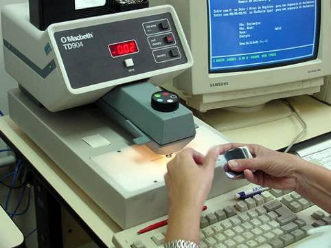
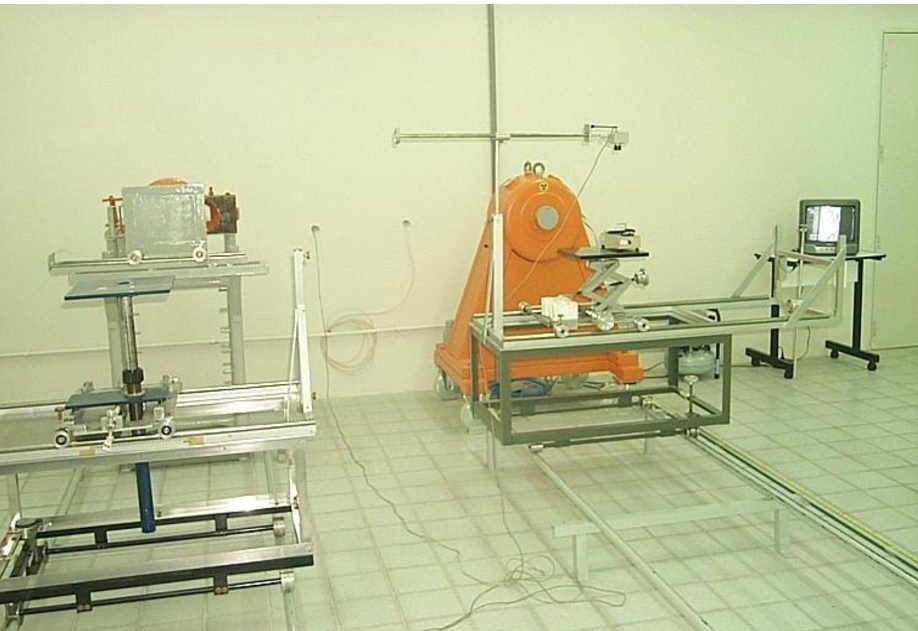
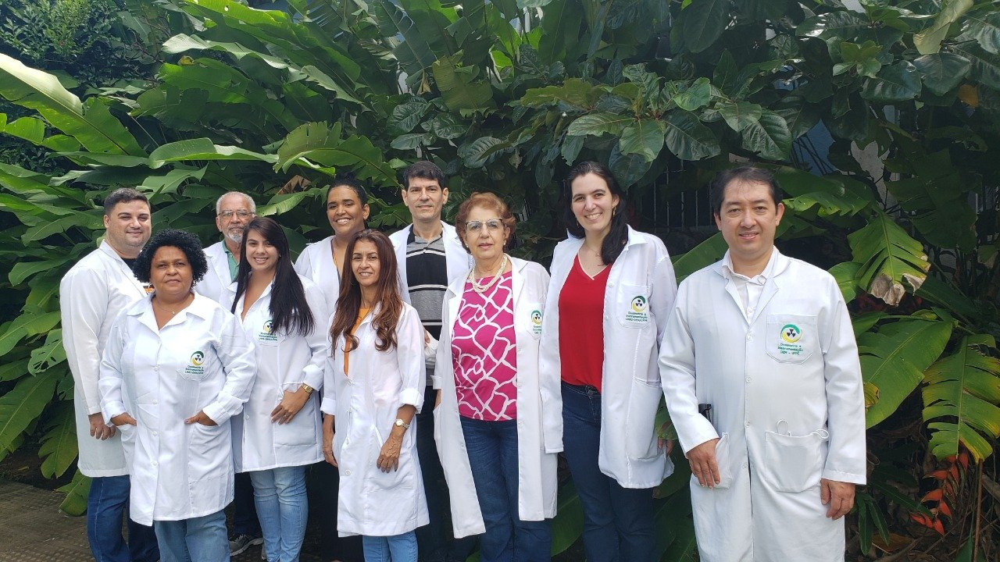

Início / Laboratórios / LMRI

Laboratório de Metrologia das Radiações Ionizantes
Calibração de instrumentos de radioproteção e radiodiagnóstico para indústrias, hospitais, clínicas e universidades de todo o país.
Departamento de Energia Nuclear
Universidade Federal de Pernambuco

Calibração para
cada aplicação.
Monitores de radiação, dosímetros e sistemas de medida. Explore os serviços e fale com a equipe sobre o seu instrumento.
Radioproteção
Calibração de instrumentos utilizados na monitoração de pessoas, ambientes e superfícies.

Alarmes pessoais PA
Calibração com feixes de radiação gama e raios X.
Consultar este serviçoCanetas dosimétricas CD
Calibração de dosímetros do tipo caneta com feixes de radiação gama e raios X.
Consultar este serviçoMonitores de área GM
Calibração de detectores Geiger-Müller e instrumentos de monitoração de área.
Consultar este serviçoMonitores de contaminação de superfície CS
Calibração de instrumentos para medidas de contaminação de superfície.
Consultar este serviçoRadiodiagnóstico
Serviços para sistemas de medida usados em radiodiagnóstico, mamografia e tomografia computadorizada.
Falar com a equipeCâmaras de ionização
Calibração com feixes de raios X nas qualidades de radiodiagnóstico, mamografia e tomografia computadorizada.
Consultar este serviçoMedidores não invasivos
Calibração de sistemas não invasivos de medida de tensão e tempo de exposição.
Consultar este serviçoAvaliação de equipamentos
Avaliação de equipamentos de radiodiagnóstico. Entre em contato para apresentar a aplicação e consultar o atendimento.
Consultar este serviçoUma trajetória dedicada
à metrologia das radiações.
Implantado em 1997, o LMRI integra o GDOIN, no Departamento de Energia Nuclear da UFPE. Sua estrutura dá suporte à calibração de dosímetros e instrumentos de medida de radiações ionizantes.
A implantação teve apoio da Agência Internacional de Energia Atômica (IAEA), por meio dos projetos BRA 47 e 48, que contribuíram para formar uma rede brasileira de metrologia das radiações ionizantes com os laboratórios do IPEN/SP, CDTN/MG, IRD/RJ e DEN/UFPE.
- 1997
- Implantação do LMRI no DEN/UFPE.
- 2002
- Autorização pelo CASEC/IRD/CNEN para calibração de instrumentos de radioproteção.


Conhecimento que se constrói em equipe.
O laboratório reúne atividades técnicas, gestão da qualidade e apoio administrativo para a prestação de serviços metrológicos.
A formação e a atualização dos colaboradores nos temas da metrologia das radiações ionizantes fazem parte do trabalho do LMRI.
Conheça a equipe do GDOINQualidade e
competência técnica.
O compromisso com a qualidade orienta os serviços metrológicos do LMRI, da preparação das medidas à qualificação da equipe.
- Acreditação Cgcre/Inmetro
ABNT NBR ISO/IEC 17025:2017, para os serviços abrangidos pelo escopo acreditado.
Consultar a Rede Brasileira de Calibração- Autorização CASEC/IRD/CNEN
- Calibração de instrumentos de radioproteção, com autorização obtida em 2002.
Vamos cuidar da
sua próxima calibração.
Converse com a equipe sobre o instrumento, a aplicação e o agendamento do serviço.
metrologia.lmri@gmail.comEncontre o LMRI
Departamento de Energia NuclearUniversidade Federal de Pernambuco
Av. Prof. Luiz Freire, 1000
Cidade Universitária, Recife, PEVer localização no mapa